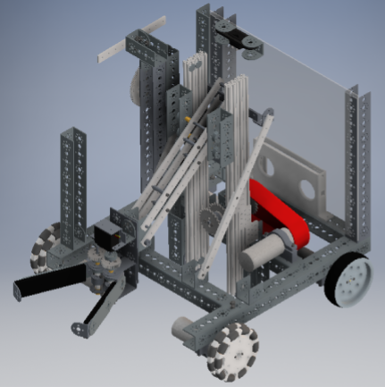
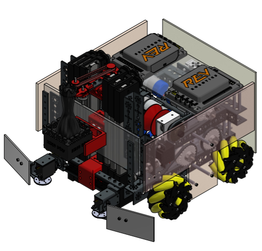
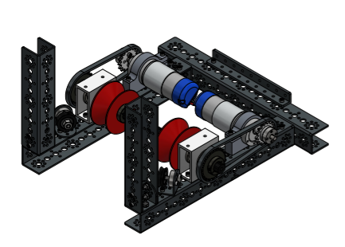
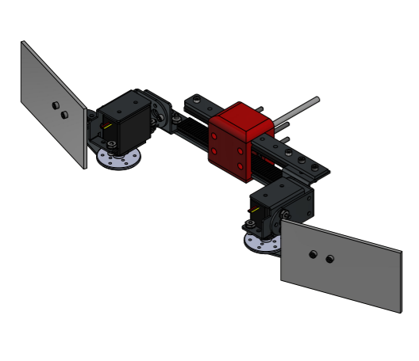
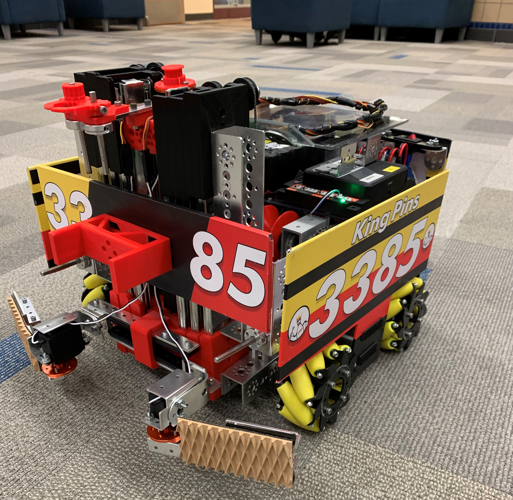
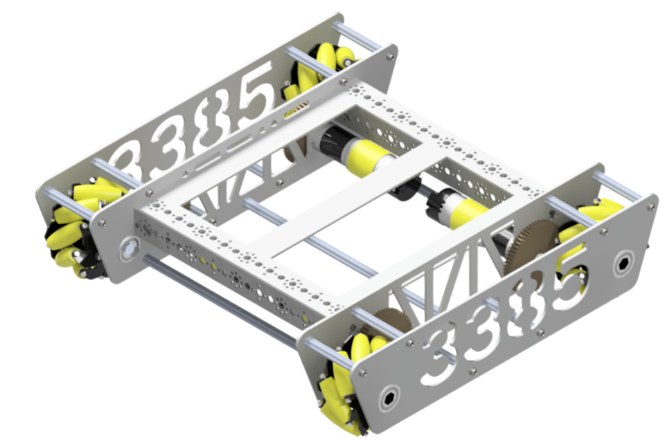
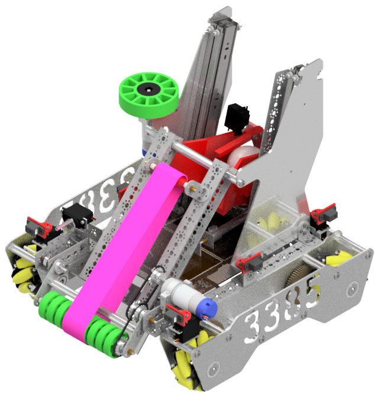
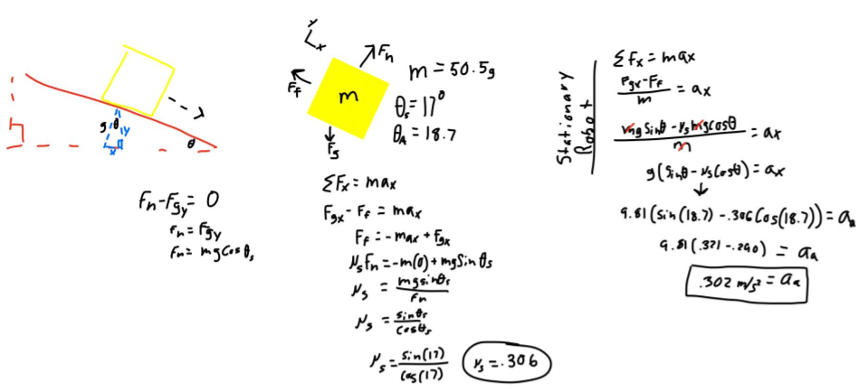
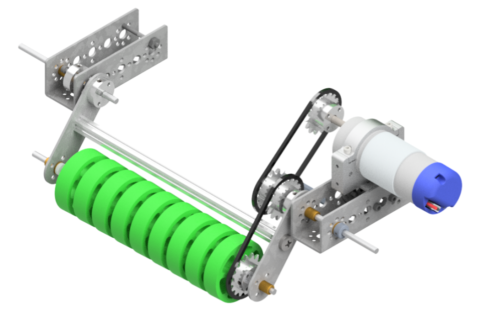

FIRST Robotics
Participating in FIRST Robotics programs was the biggest factor in determining what I wanted to do in the future and what I wanted to study in college. I learned countless engineering and team leadership skills, and I made some great friends. I continue to stay involved with FIRST by volunteering at events, and in the future, I plan to help mentor a team.
FTC
I joined FIRST Tech Challenge Team 3385 as a freshman and continued through senior year. I focused on CAD and documentation in my first seasons but expanded to include programming by my junior year. We were successful overall. We learned a bit from our first year, and after that we had very competitive robots. During my time in FTC, I learned how to work as a team in a non-athletic environment and I became a leader over the years. I developed my CAD skills and enabled myself to take on a lot of responsibility during my senior year.
2018-19 Season

For our first season, we didn't do any CAD-ing before construction. I followed along as my teammates added things to the robot to practice CAD-ing. We did surprisingly well for our first season, but the design had a few issues. The biggest issue was the center of gravity. We put all our electronics on the back of the robot, so we tended to tip backward. We also didn't create a great intake system, so we had to precisely position our robot to collect game pieces, which cost us a lot of time. My biggest contribution to the robot itself was two 3D-printed parts (the first parts I'd ever designed for printing). One was a phone mount (the robot's communication device), and the other was a chain cover. The biggest challenge (and learning experience) was material saving. I started with a rather bulky cover, but through four redesigns, I got it down to the necessities. In all, this was a great learning season, and we started to realize the utility of 3D-printing in FTC.
2019-20 Season

For our second season, we decided to do a lot of the design work before we started building. At one point in the season, we started improvising to get everything working, but otherwise we had a plan for what we were doing. This robot was much sturdier, heavier, and performed much better. We qualified for State by winning a qualifier, but didn't do very well at State. My favorite part of this robot was the capstone mechanism (the components holding up the bowling pin at the front of the robot), which was almost entirely 3D-printed. This was the first time I used TPU filament (for a belt) and the system had almost no issues. One goal for this robot was reuse of parts, so we used 3D-printed brackets to hold together a series of drawer slides as a linear rail system. After our first tournament, we realized the pitfalls of Tetrix parts. We replaced our winching mechanism with standard FRC parts to provide more strength. We also acted on lessons from last season to produce an intake that didn't require precise positioning. Finally, we started to recognize the importance of curb-appeal (as it pertains to the robot), so we decked out our protective side-panels in stickers to make everything look cooler. We won the outreach and control awards this season.



2020-21 Season

The 2020-21 season was entirely virtual, so we decided to work on developing a solid drivetrain instead of completing the challenge. Most of our problems with driving last season were due to backlash in the chain-driven system. The robot was also heavy enough that it bent the axles over time. This new drivetrain aimed to solve both those issues. It utilized CNC milled side panels connected with churro beams and Tetrix parts. Essentially, it's a combination of FTC and FRC parts. The axles were 1/2" hex stock and the gears were from VexPro, which means they are much more robust and have tighter tolerances than the previous system. The kinks in the system were relatively easy to iron out, and we had the strongest drivetrain of any robot at our school. This was also the year I started programming. I spent a lot of time tuning PID loops to make the robot move and turn precisely. The turning was controlled based off IMU data.
2021-22 Season

This season, my FTC team and I were more interested in making sure we had time for the FRC season, so we decided to focus more on learning new things than building the most competitive robot. Admittedly, we made a rather competitive robot that would've made it to State if we made the drivetrain smaller to fit the game better. My focus was on the programming and design of the robot. My favorite part of the programming was the localization algorithm because I needed to create something that I hadn't seen before. This was also the year that I learned physics, so I tried out using some of that knowledge in the design. I wanted to determine the angle at which the bucket would need to sit for the cube (not shown) to slide down without extra force. I needed some help from my teacher to set up the problem, but we got it worked out, and it worked well. The programming was a large undertaking for this robot, so I didn't experiment with much else, other than designing my first roller intake. Overall, this robot is the culmination of all the things my teammates and I learned over our four years in FTC and it turned out very well.


FRC
I got heavily involved in FRC (2169 | KING TeC) as a sophomore and became a team captain by my senior year. I was heavily specialized in the CAD/CAM department, being one of two people in my senior year, but I also filled in on the mechanical and programming teams as needed. COVID-19 made me lose a season just when I was getting interested in FRC, but I was a pivotal team member during my senior year.
2020 Season
2020 was the first year I got involved with FRC. I didn't hold a leadership position, but I was responsible for the climber and bar articulator design. My original designs were severely reduced after we approached the weight limit without having a climber installed, so it ended up being rather ineffective. The final design only had one hook that would be raised to reach a swinging bar, which likely would've ended very poorly, but we never got around to testing due to COVID-19 shutting everything down. The one regional we were fortunate enough to participate in went well, but the lack of a climber kept us from the playoffs. We won the spirit award at the regional event. My original design for the climber system had two identical towers with a larger system hanging between them that could move the robot on the bar. The hanging system, in its deprecated state, would have likely failed because of the location of the robot's center of gravity, but I'm sure that would've been resolved if it were to be constructed.

2022 Season
The 2022 season was my opportunity to lead the team and design a full FRC robot. I was a team captain and the design lead. After we decided what mechanisms we wanted and how they should work, I built out the CAD for the entire robot, minus the telescoping climbers and electrical systems.
This robot won the Industrial Design Award sponsored by General Motors, which is given to a team that demonstrates industrial design principles, striking a balance between form, function, and aesthetics. The robot did very well, especially with the limited team we had: we made it to the last few rounds of playoffs in both regionals we attended, and we qualified for State. The biggest pitfall with the robot was a lack of manueverability. We didn't use a swerve drive or a turret, so we were outpaced in the late playoff rounds. As a team, we decided to avoid swerve and a turret because we doubted our skills and overestimated how much time it would take to make everything. Other than design work, I operated the CNC mill, did some manual fabrication, and helped out as needed. I also ended up being the lead programmer for about a week (while our main two programmers were on vacation). I tuned the flywheel PID loop because the slow ramp up cost us a lot of time during our first regional, and I fine tuned the more ambitious autonomous that our other programmers wrote before vacation. Despite not qualifying for the World Championship, I'm happy with how the season turned out and grateful for all I learned.